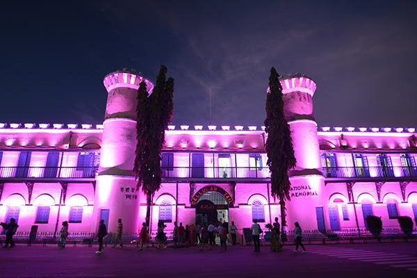

Port Blair
Discover the cultural and historical heart of the Andaman Islands in Port Blair, a coastal city that beautifully combines colonial history, scenic landscapes, and island charm. The city is most famous for the Cellular Jail, a historic prison that stands as a powerful symbol of India’s freedom struggle and evokes deep emotions through its preserved architecture and light-and-sound shows. Beyond its historical significance, Port Blair offers scenic coastlines, bustling local markets, museums, and beautiful waterfronts that reflect the tropical character of the islands. Nearby islands and beaches further enhance its appeal, making it the perfect gateway to explore the Andaman archipelago. The calm sea breeze, lush greenery, and peaceful surroundings create a refreshing atmosphere that balances history, culture, and natural beauty.